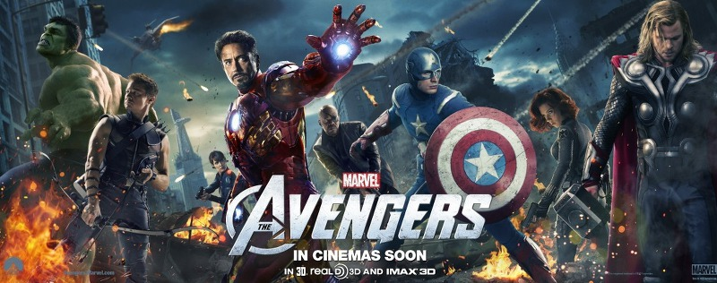
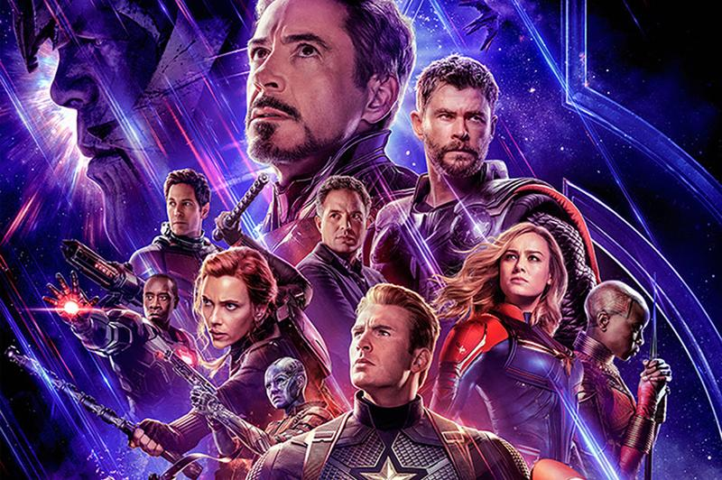

감명 깊었던 영화들

내가 처음으로 영화관에 영화를보러가는것에 매력을 알려준영화 나를 본격적으로 마블영화를 보게 만들었다. 지금봐도 시각적인 효과가 뛰어나다.
어벤져스1
내가 처음으로 영화관에 영화를보러가는것에 매력을 알려준영화 나를 본격적으로 마블영화를 보게 만들었다. 지금봐도 시각적인 효과가 뛰어나다.

영화관에서본 두번쨰 마블시리즈이다. 마블시리즈중 개인적으로 가장재미있고 히어로,sf영화 장르중에 여운이 가장 많이남았던영화이다.
엔드게임
영화관에서본 두번쨰 마블시리즈이다. 마블시리즈중 개인적으로 가장재미있고 히어로,sf영화 장르중에 여운이 가장 많이남았던영화이다.

캐치 미 이프 유 캔(catch me if you can)
볼영화가 없어 이런저런영화들을 찾아다니면서 보다가 찾게된 영화로 처음까지만해도 그저 실화를 바탕으로한 사기꾼이 나오는 오락영화정도로 치부했지만 뛰어난 능력의 주인공을 보며 대리만족감도 느꼇지만 가정상황으로 인해 그 능력이 나쁜일에 쓰이는것을 보며 평범한 내 일상에 소중함을 느낄수있었다.